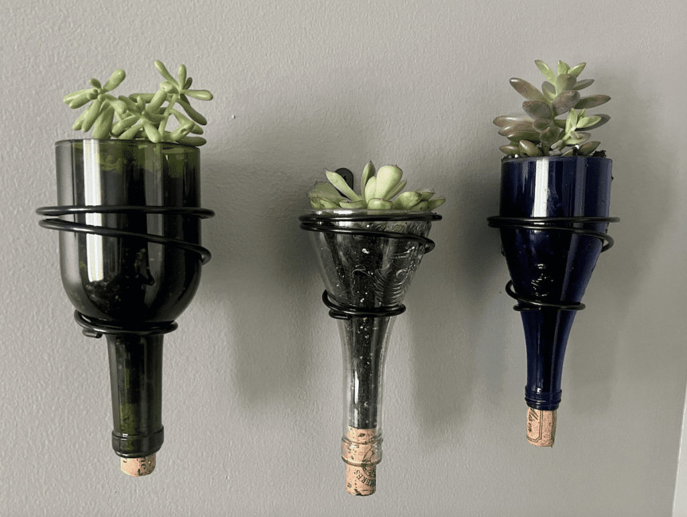
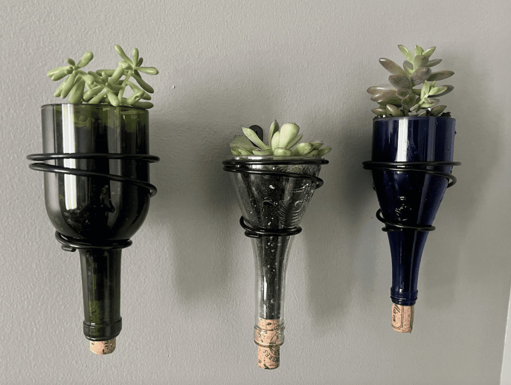

It’s about taking something old and worn, or discarded
and turning it into something of higher value or purpose.
Short ‘product lives’ and disposable packaging result in premature disposal of valuable resources. Industrialization, mass production and global supply chains have resulted in a disconnect between people, places, materials and design. Upcycling is reuse of discarded materials which results in an increase in ‘value’. We discuss the potential for creative upcycling to reconnect people with materials and establish cultures and communities of making. The reaction of the public to creative reuse is explored by creating a café structure made entirely from recycled materials, and this provides the starting point to consider the contexts in which upcycling occurs, the motivations for reuse and upcycling, the potential benefits of upcycling in the context of affluent Western 'consumer' societies, and the scope for designers to imbue objects with the potential for creative reuse. We argue that designing to enable creative upcycling allows the future lives of objects to be contingent on context and culture, rather than being prescribed by the designer, with potential for widespread social, economic and environmental benefits.